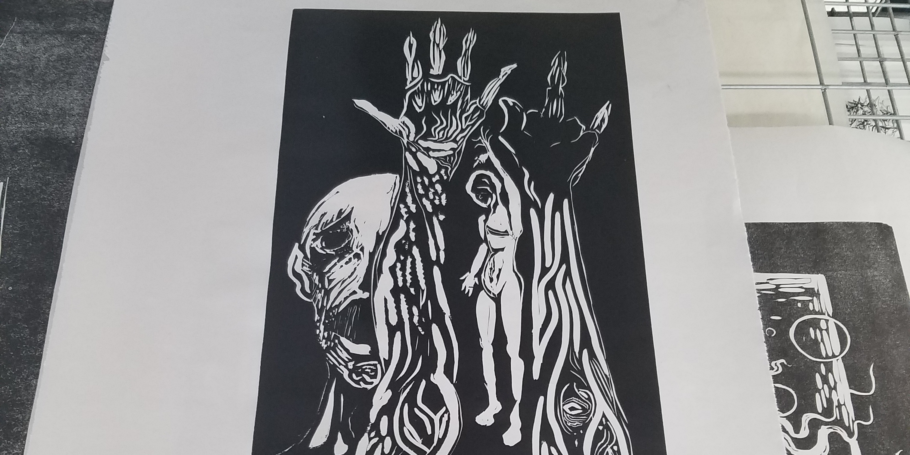

Tuesday Prints
1
Lino, starts with a sketch.
2
The sketch will continue the previous print in a searies.
3

Cut a lino block to your print peramatores,
then measure to center the sketch.
4

After its transfered you can set up to carve the lino block.
5

Then carve away, leaving plenty of lino scraps as you do.
6
Take time to contemplate your carve.
7

The window of the printing studio.
8

Pause to take a test print before you finish carveing.
9

Take time to test the print as you care it as compared above.
10

Above are the first prints in this series.